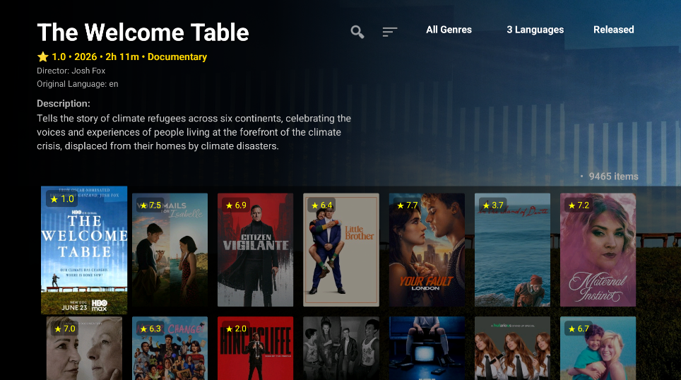
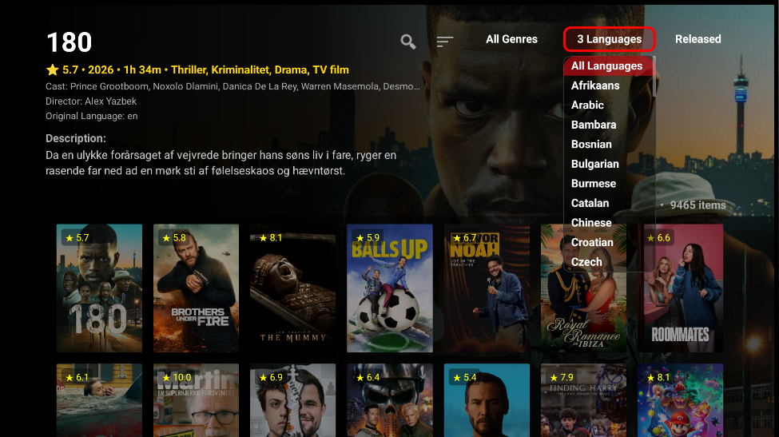
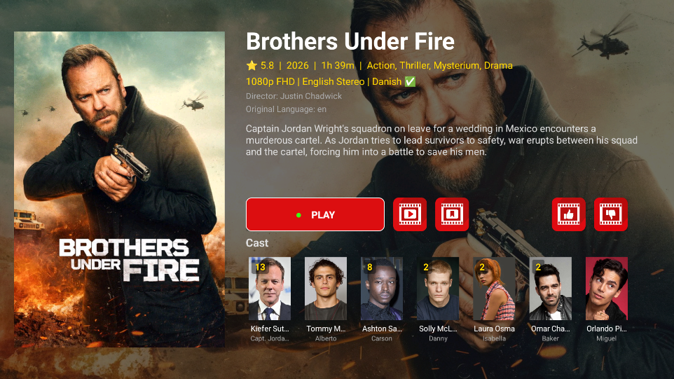
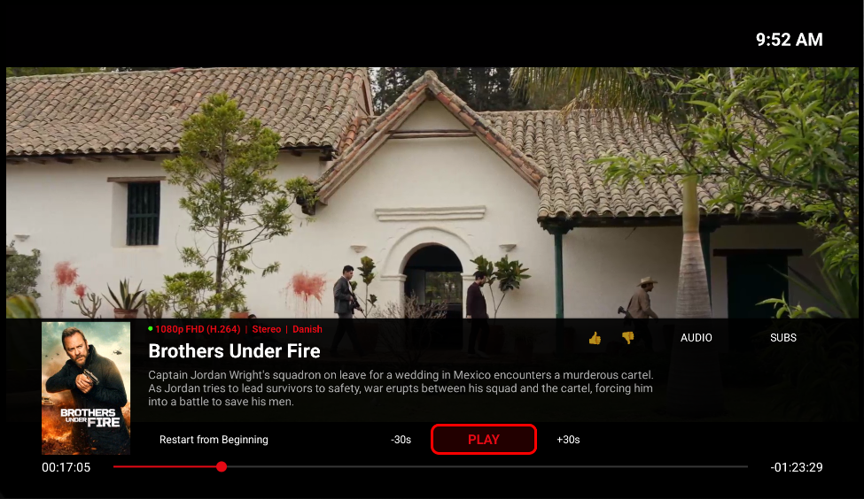
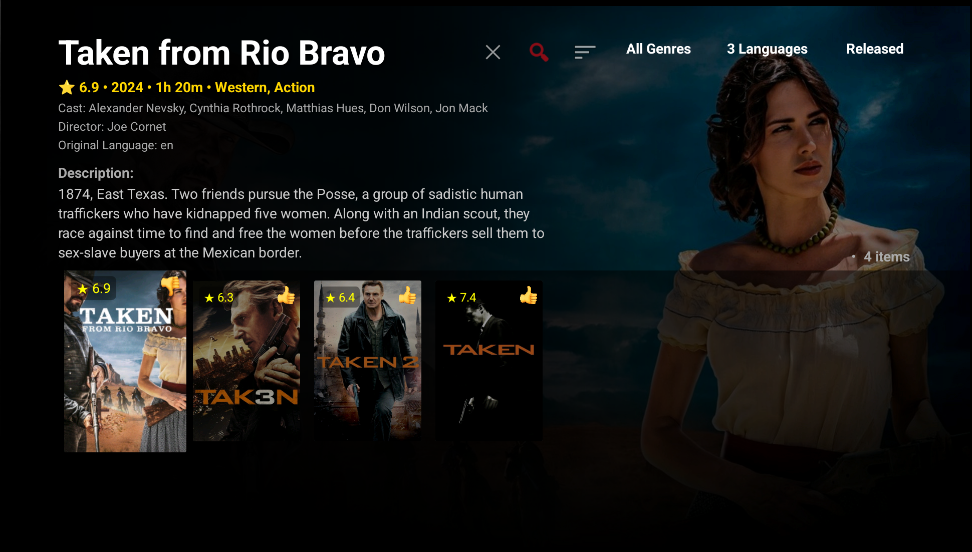
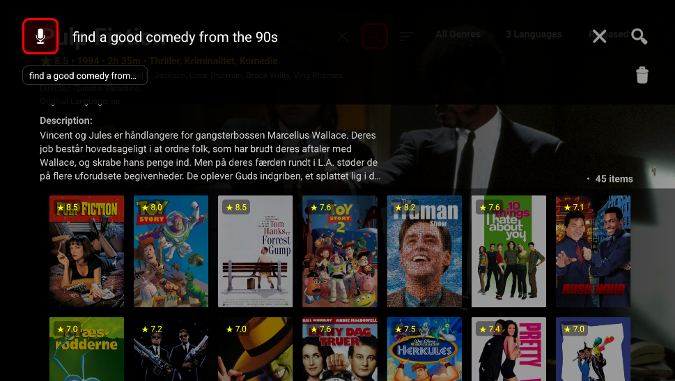

3. Daily use — Movies/Series
Browse posters, open details, rate titles, and search with AI. Movies and Series are two menu items with the same tools.
Browse

Screenshot needed: 04-movies-browse.png'">
Screenshot needed: 05-movies-filters.png'">Details and playback

Screenshot needed: 06-details-movie.png'">
Screenshot needed: 07-playback-controls.png'">Play, resume, trailer, audio/subtitle tracks, and stream quality are on the details screen. During playback you can change audio and subtitles without leaving the movie.
If the same title exists on another provider, Intelligent stream switching can move to that stream when playback fails.
Rating
Ratings teach the app what you like. Suggested Movies and Suggested Series on Home use your thumbs together with a Gemini API key.
- Hold OK on a card for 👍 / 👎
- Add to My List from the details screen
- Ratings are per profile and sync with Cloud Sync

Screenshot needed: 17-rating-badge.png'">AI Search
Search looks inside your own library — not the whole internet. You can type, or speak on Google TV.
- Open the search icon on the Movies or Series screen.
- Ask in natural language, for example “a 90s crime drama” or “a zombie movie with dark humor”.
- Voice search on Google TV: enable it under Settings → UI & Languages → Interface & OSD.
- AI search needs a Gemini API key under Settings → Accounts & Connections → Gemini AI.

Screenshot needed: 16-search-ai.png'">